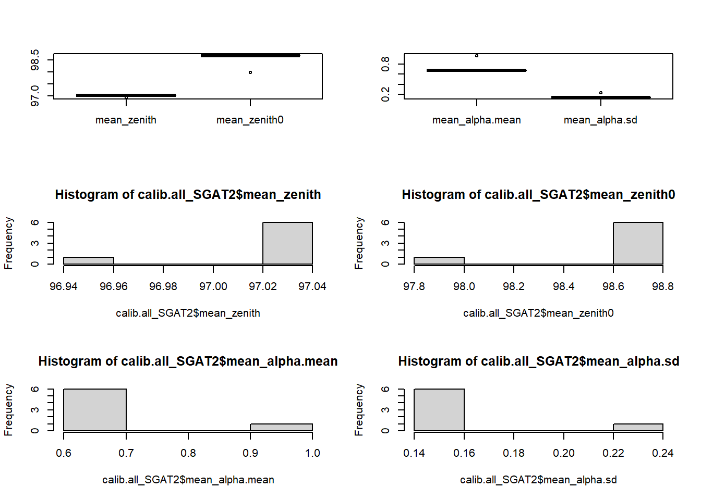

# Both packages allow us to download packages from external repositories as GitHub
install.packages("devtools")
library(devtools)
install.packages("remotes")
library(remotes)
#Installing packages from GitHub
install_github("SWotherspoon/SGAT")
install_github("SWotherspoon/BAStag")
install_github("bmcclintock/momentuHMM")
install_github("SLisovski/TwGeos")
install_github("SLisovski/GeoLight")GLS supervised calibration analyses
1. Introduction: why calibrate GLS?
Twilight events are transitions of light between day and night, and vice versa. To establish them, it is set a predetermined light intensity threshold that divides daytime from night, so sunrises and sunsets can be temporarily noted (threshold-based method). The threshold must consist in the minimum possible value that is consistently above the noise in the light intensity captured at night (Lisovski et al., 2019).
GLS may vary in the way they measure and capture light due to environmental reasons or accuracy errors. Thus, it is first necessary to carry out a calibration of these devices to relate the expected light levels to those observed and be able to extract the final positions with minimal error. We employ the rooftop calibration method (Lisovski and Hahn, 2012). Each GLS has at least two calibrations, one pre-deployment and one post-recovery, in stationary locations with a minimum of light pollution. These calibrations should last at least seven days each, with the devices placed over a flat elevated surface, considering there cannot be any element that shadows (e.g., from buildings or rock walls), and in two different geographical locations, if possible.
The sunrise and sunset times captured by the GLS are associated with those of the area where the calibration was carried out. This information must be manually reviewed to correct or remove misplaced twilight events due to false light peaks in non-transition hours. At the same time, points on the map move with the twilight correction until they are all adjusted to the correct location. These calibrations involve subjective assessment, but Bråthen et al. (2021) showed that it could be performed consistently and with a high repeatability.
2. Load packages and functions
Some packages require to be installed remotely from other repositories outside of CRAN. Following lines need to be run only the first time.
We load other required packages
pacman::p_load('devtools','remotes', # loading packages
'readxl', # opening Excels and csv
'tidyverse', #managing data
'lubridate', # dealing with dates
'maps', 'rworldmap', 'maptools', # creating map for Geolight
'GeoLight', 'BAStag', 'TwGeos','SGAT' # geolocators
)
if ("purrr" %in% .packages()){
detach("package:purrr", unload = TRUE)
}
# to avoid problems with map functionLastly, we load own functions, specifically designed for working with GLS data.
source("functions/01_FUNCTIONS_Supervised_GLS_calibrations.R") # simplify working with GLS data3. Read metadata and define thresholds
Metadata file contains the files available for each GLS (i.e., light, wet-dry and SST data) and the format of each file, which depends on the producer.
Information file contains the essential information of each GLS (e.g., calibrations dates, calibrations localities, deployment and recovery dates, individual, colony and number of yearly trips contain).
Calibrations information file contains the specific information for each calibration period of each GLS. Each GLS can be calibrated more than once and in different places. Here is added the coordinates of each calibration locality.
Following values are limiting the area for map the raw points inferred from light data along calibrations period. The map will be a helping tool, but not the main one.
Threshold defines the light levels above which it is day and below it is night .Normally it is between 1.5 and 2.
The map will be a helping tool, but not the main reference to take decisions.
4. Loop to determine sun angles parameters
We are usually going to work with multiple GLSs at the same time. Due to that, the best option is apply a loop to chain each calibration with the following one. In that way, we will save time, avoiding manually introduce each values.
4. Extraction of calibration parameters
4.1. Read information
We get all the essential information of the GLS.
i=1
gls.dir <-paste0(getwd(),'/input/GLS/')
# Load .lux file and extract the GLS id from the name of the file
info<-mdata[i,]
geoID <- info$geo_alfanum # Which GLS is processing
LoggerModel <- info$Modelo # logger model
Producer <- info$Producer # e.g "Migrate Technology","BAS","Biotrack","Lotek"
lightfile <- if_else(!is.na(info$File.adjlux), info$File.adjlux, info$File.lux)
lightfile_c <- paste0(gls.dir, lightfile)
# Get info of the GLS and its calibration
calib<-calib.info%>%filter(geo_alfanum == geoID)# calibration infoAdditionally, we can extract other extra information useful, for example for saving the files or if we are analyzing GLS from different colonies and species.
# Additional information
col.name <- info$Colony
start_date<-as.Date(info$start_date, tz = 'GMT') #date start the trip
end_date <-as.Date(info$end_date, tz = 'GMT') #date end the trip
sp <- info$Sp # species
year <- info$Year_rec # recovery year
cat('Processing geo (', i,') ', geoID, 'for year', year, '\n')Processing geo ( 1 ) 11001 for year 2003 4.2. Read light data
With the information read, we can use the function to read raw light data from any model of GLS. We need to specify the company o produce (e.g., Migrate Technology, Biotrack…), the ID of the GLS, the file/path that contains the data. Furthermore, we can subset the starting and ending date of recording data (i.e., deployment and recovery dates) if we are interested in.
In very few cases, some files from Migrate Technology cannot be read by readMTlux function. We can include them in MTexcep to read them correctly.
lu <- read_lightGLS(producer = Producer, ID = geoID,
file = lightfile_c
# start_date
# end_date
)4.3. Calibration parameters
For each calibration period we are going to extract several parameters that we will need for further steps processing GLS data. We base the loop procedure in thresholdCalibration function from TwGeos package.
Zenith angles:
Zero deviation zenith angle
Median deviation zenith angle
Parameters of error distribution (alpha parameters:
Shape
Scale
twl_error.list <-list()
for (step in 1:3) {
# step = 1
# Define the calib_start and calib_end for the current step
calib_start <- as.POSIXct(calib[[paste0("calib_start", step)]], tz = "GMT")
calib_end <- as.POSIXct(calib[[paste0("calib_end", step)]]+1, tz = "GMT")# add one day to take all the hole calibration period
n_days <- round(as.numeric(difftime(calib_end, calib_start,
units = 'days')))
loc <- calib[[paste0("loc_calib", step)]]
lon <- calib[[paste0("Lon", step)]]
lat <- calib[[paste0("Lat", step)]]
calib_SGAT <- NA
if (!is.na(loc) && !is.na(calib_end)) {
# Perform calibration for the current step
twl <- calib_period(data = lu,
start = calib_start,
end = calib_end,
lon = lon, lat = lat,
threshold = threshold)
# Optionally: Save light file of the calibration period
save_calib(twl, geoID, sp, year, col.name, step)
# Perform SGAT calibration
calib_SGAT <- calibration_SGAT(twl, lon = lon, lat = lat, method = 'gamma')
} else {
message('No calibration information for step',step,'\n')
calib_SGAT <- c('NA', 'NA', 'NA', 'NA')
}
if(step == 3){cat('Geo done')}
twl_error <- bind_cols(geoID = geoID, Producer = Producer, Year = year, Colony = col.name,
n_days = n_days,
zenith = calib_SGAT[1],
zenith0 = calib_SGAT[2],
alpha.mean = calib_SGAT[3],
alpha.sd = calib_SGAT[4],
Loc = loc)
colnames(twl_error)[5:10]<- paste0(colnames(twl_error[5:10]),'_PD', step)
twl_error.list[[step]] <-list(twl_error)
}
twl_error_GLS<- bind_rows(calib_SGAT.list)%>%
group_by(geoID, Producer, year, Colony) %>%
summarise_all(funs(na.omit(.)[1]))
calib.list_SGAT[i]<-list(twl_error_GLS)
# Outside the loop joining SGAT calibration parameters
calib.all_SGAT <- bind_rows(calib.list_SGAT)
str(calib.all_SGAT)# check the structure of our data
calib.all_SGAT<-calib.all_SGAT%>%
mutate_at(c(3,5:8,10:13,15:18), as.numeric)%>% # transform to numeric, then we can operate
mutate(mean_zenith = NA, mean_zenith0 = NA, mean_alpha.mean = NA, mean_alpha.sd = NA)# create summary columns5. Checking outliers
Sometimes we can get values extremely high or low of some of the calibration parameters in some of the calibration periods. To avoid issues, we will find the outliers and remove them to calculate mean values per GLS.
# Define variables and producers to check
vars <- c("zenith_PD1", "zenith_PD2", "zenith_PR3",
"zenith0_PD1", "zenith0_PD2", "zenith0_PR3",
"alpha.mean_PD1", "alpha.mean_PD2", "alpha.mean_PR3",
"alpha.sd_PD1", "alpha.sd_PD2", "alpha.sd_PR3")
prd <- c("Migrate Technology", "Biotrack")
calib_list <- list()
# Loop through producers and apply the outlier detection and replacement
for (p in prd) {
cal.df <- calib.all_SGAT %>%
filter(Producer == p)
cal.df <- calib_out(cal.df, vars)
calib_list[[p]] <- cal.df
}
# Combine data from different producers
calib.all <- bind_rows(calib_list)
# Sort the data by geo_alfanum
calib.all <- calib.all %>% arrange(geo_alfanum)
# head(calib.all)6. Mean values of calibration parameters
Once we have removed the outliers we can calculate mean values.
calib.all_SGAT2<- calib.all %>%
group_by(year, Colony, Producer)%>%
mutate(mean_zenith = ifelse(is.na(zenith_PD1) | is.na(zenith_PD2) | is.na(zenith_PR3),
mean(c(zenith_PD1, zenith_PD2, zenith_PR3), na.rm = TRUE),
zenith_PD1))%>%
mutate(mean_zenith0 = ifelse(is.na(zenith0_PD1) | is.na(zenith0_PD2) | is.na(zenith0_PR3),
mean(c(zenith0_PD1, zenith0_PD2, zenith0_PR3), na.rm = TRUE),
zenith0_PD1))%>%
mutate(mean_alpha.mean = ifelse(is.na(alpha.mean_PD1) | is.na(alpha.mean_PD2) | is.na(alpha.mean_PR3),
mean(c(alpha.mean_PD1, alpha.mean_PD2, alpha.mean_PR3), na.rm = TRUE),
alpha.mean_PD1)) %>%
mutate(mean_alpha.sd = ifelse(is.na(alpha.sd_PD1) | is.na(alpha.sd_PD2) | is.na(alpha.sd_PR3),
mean(c(alpha.sd_PD1, alpha.sd_PD2, alpha.sd_PR3), na.rm = TRUE),
alpha.sd_PD1))%>%
filter(!duplicated(geo_alfanum))
par(mfrow= c(3,2))
boxplot(calib.all_SGAT2[,25:26])
boxplot(calib.all_SGAT2[,27:28])
hist(calib.all_SGAT2$mean_zenith)
hist(calib.all_SGAT2$mean_zenith0)
hist(calib.all_SGAT2$mean_alpha.mean)
hist(calib.all_SGAT2$mean_alpha.sd)
write_csv(calib.all_SGAT2, file = 'output/Supervised_calibrations_SGAT.csv')Finally, we can summarize the calibration parameters per colony, species and year. This step will be helpful to analyse GLS than has not been calibrated or the calibration period is invalid (e.g., along equinox periods, too short period or not annotated).
calib_SGAT_summary <- calib.all_SGAT2 %>%
group_by(Colony, year, Producer) %>%
dplyr::summarise(
n_geos = n_distinct(geo_alfanum),
zenith_mean = mean(mean_zenith, na.rm = TRUE),
zenith0_mean = mean(mean_zenith0, na.rm = TRUE),
alpha.mean_mean = mean(mean_alpha.mean, na.rm = TRUE),
alpha.sd_mean = mean(mean_alpha.sd, na.rm = TRUE)
) %>%
arrange(year) %>%
distinct()
write_csv(calib_SGAT_summary, file = 'output/Summary_SGAT_calibrations.csv')